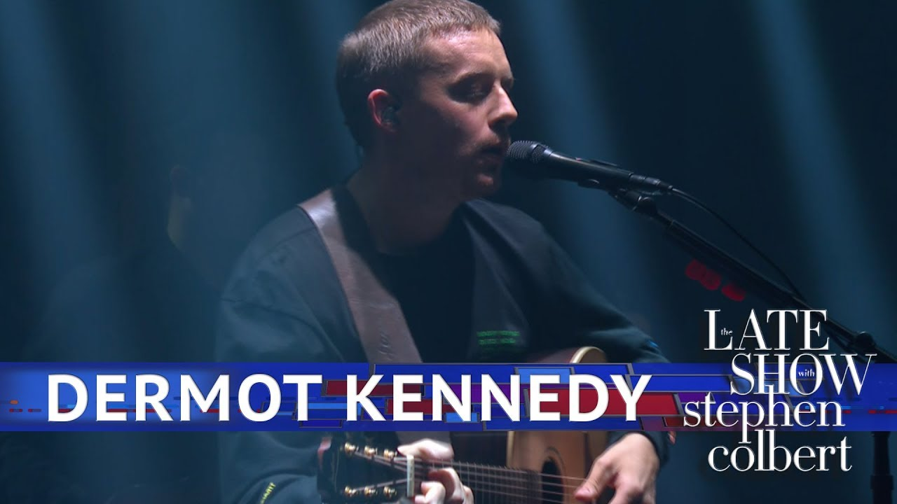

Cluas
Éireann

Cluas Éireann
Bringing you the latest music updates from Ireland
Dermot Kennedy and Success
Detailing Dermot Kennedy's success abroad and it's unusual nature
Irish singer-songwriter Dermot Kennedy has once again proven his talent with a fantastic appearance on the Ellen Show. He described his experience as a dream come true, but there is more down the pipeline for this young artist.
This had come just on the back of a performance on the Late Show with Stephen Colbert and his showing massive growth for the Dublin native.
Starting out busking on the streets of Dublin and selling 8 track CDs for just €5 he is now one of the fastest growing names in music, with a name so popular he will be performing in Coachello, California next month along with the likes of Tame Impala, Childish Gambino, Ariana Grande and the 1975.
What is especially notable about Dermot is that his sudden rise to international fame has not been achieved by the usual ways Irish musicians break onto the international music scene. A big part of his success has been achieved in large part because of Spotify and various YouTube appearances. When talking about one of his first gigs in the UK he described how a couple listeners came up to him afterwards to say that they came to listen because one of his songs Boston) had popped up into their recommended on Spotify. Within the space of a couple weeks he was going from a man with maybe 40 people listening to his songs on Spotify a day to over 50,000. The fluctuations of the Spotify algorithm had made it so that his song was often recommended by Spotify to its listeners. Certainly not bad for a man who at this stage had not even created an album.
Continuing on his extraordinary journey, he had made an appearance on the YouTube channel Colors which has over 3 million subscribers and is highly focused on giving only the most exceptional talent from around the globe a platform. His performance had racked up over 3 million views and was soon followed up on the ever wonderful NPR Music Tiny Desk Concerts.
However with having all this happen so quickly for him has been both a blessing and a curse and he says he is careful to not forget his Irish roots while utilizing aspects of American Hip-Hop and other genres in his music and while performing across the globe.
Next May, Dermot will be performing at 4 sold-out shows in the Olympia Theatre, Dublin and is also announced to perform at Electric Picnic in Malahide Castle this summer.

Author: xxxx
xx/xx/xxxx